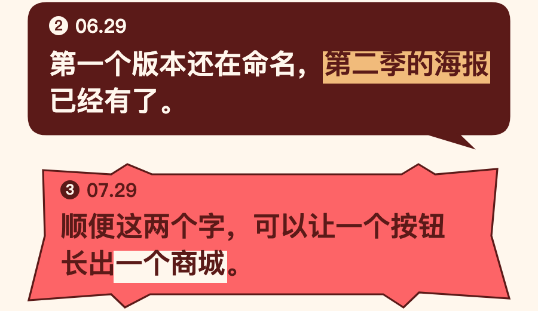
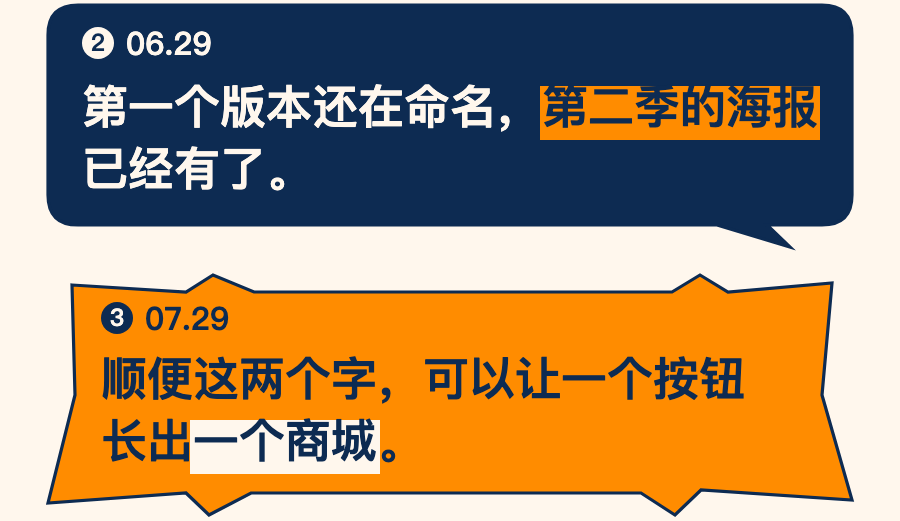
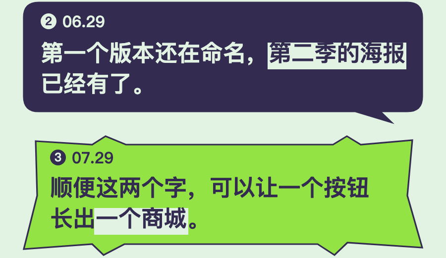
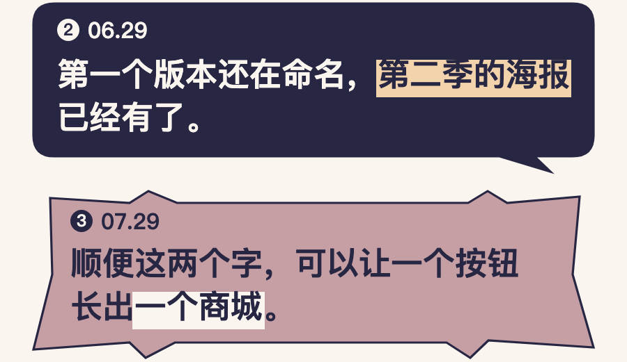

GrandBudapest1
#F1BB7B#FD6467#5B1A18#D67236

酒红铺气泡，杏金标重音，珊瑚粉填爆炸框。 看原色板
同一张「AI 迪生」A 版的两句示例文案，换四组原作配色。
色条列出每组的原始屏幕色值。
#F1BB7B#FD6467#5B1A18#D67236
酒红铺气泡，杏金标重音，珊瑚粉填爆炸框。 看原色板
#FF8C00#0D2B52
深海蓝铺气泡，黄橙填爆炸框。 看原色板
#332C50#46878F#94E344#E2F3E4
紫黑铺气泡，薄荷白配荧光绿。 看原色板
#FBF5EF#F2D3AB#C69FA5#8B6D9C#494D7E#272744
墨蓝配灰玫瑰，浅杏色把重音托出来。 看原色板